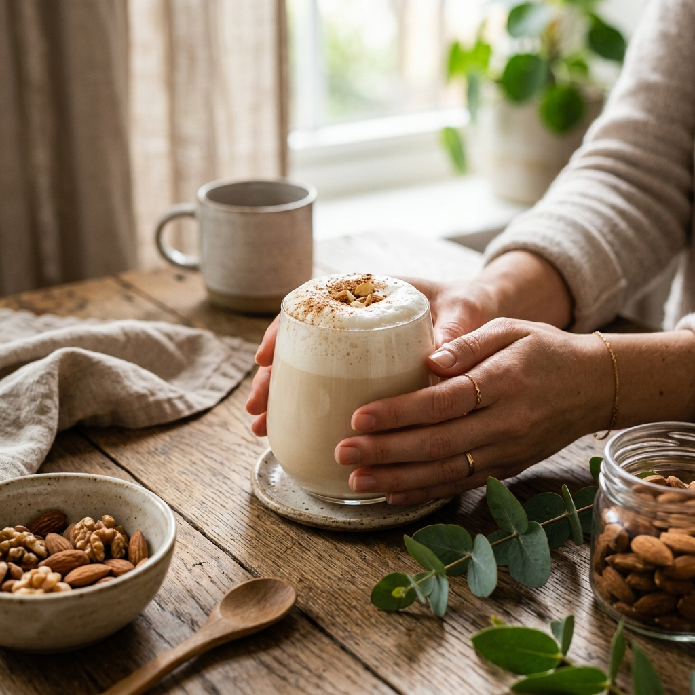
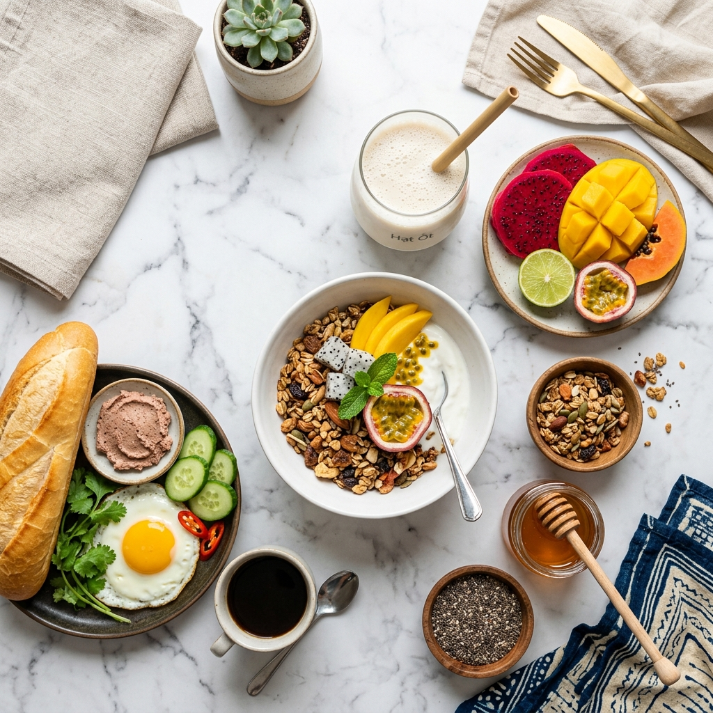

FitnessSữa Hạt Có Đủ Protein Cho Người Tập Gym Không?
Phân tích chi tiết hàm lượng protein trong từng loại sữa hạt, "nghịch lý" protein và chiến lược mix thông minh cho người luyện tập.
Đọc thêm
Gia ĐìnhTrẻ Em Uống Sữa Hạt: Điều Cha Mẹ Cần Biết
Lợi ích tuyệt vời, thời điểm "Vàng" cho bé uống sữa, lưu ý dinh dưỡng sống còn và chiến lược bổ sung theo độ tuổi.
Đọc thêm Công Thức
Công Thức5 Công Thức Smoothie Từ Sữa Hạt Ngon Xuất Sắc
Từ smoothie Chuối Bơ Đậu Phộng đến Matcha Xoài — 5 công thức "Golden Ratio" đẹp mắt và cực kỳ dinh dưỡng.
Đọc thêmOmega-3 Trong Sữa Óc Chó: Đầu Tư Cho "Tài Sản" Não Bộ
Trong kỷ nguyên kinh tế tri thức, sức khỏe trí não đang trở thành "tài sản" cần được bảo vệ. Phân tích vai trò ALA và lợi ích cho mọi lứa tuổi.
Đọc thêmPha Latte Hạnh Nhân Tại Nhà Ngon Như Quán
Khi sự tiện lợi gặp gỡ đẳng cấp Premium. Bí quyết kỹ thuật tạo bọt, nhiệt độ vàng và tỷ lệ hoàn hảo với sữa Dana.
Đọc thêmFitnessSữa Hạt Có Giúp Giảm Cân Không? Sự Thật Khoa Học
Phân tích dựa trên dữ liệu dinh dưỡng: mật độ calo thấp, chỉ số đường huyết GI và chiến lược tích hợp vào thực đơn giảm cân.
Đọc thêm